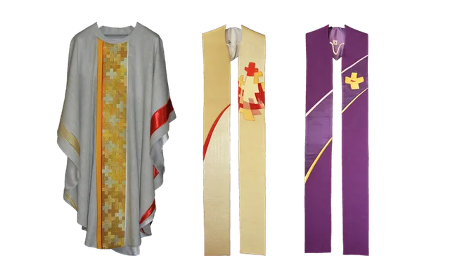

Paramente
Kaseln, Pluviale, Dalmatiken, Alben und Stolen in allen liturgischen Farben. Jedes Stück wird nach Maß gefertigt; Schnitt und Stickerei werden mit der jeweiligen Pfarrei abgestimmt.
Tücher und Stickereien
Altartücher, Tauftücher und Richelieu-Stickereien, daneben Volksstickereien für Trachten und festliche Anlässe außerhalb des Kirchenjahres.
Restaurierung
Reparatur und Restaurierung älterer Paramente, Baldachine und Tabernakel — vom Unterfüttern und Einfassen bis zur Übertragung erhaltener Stickerei auf neuen Stoff.